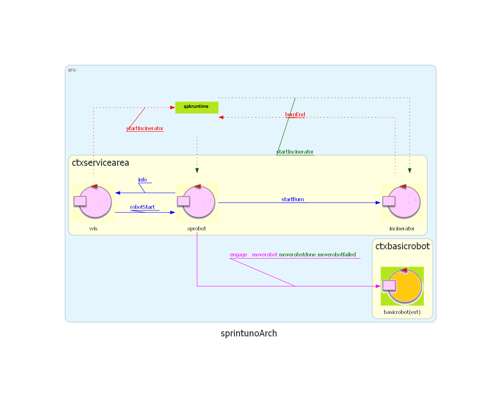

Introduction
Richiesta del committente
Analisi dei Requisiti
Requisiti
Architettura logica prodotta all'interno dello sprint1:

Goal Dello Sprint 2
Affrontare l'analisi dei problemi introdotti dai requisiti R1, generare un'architettura logica, un modello
eseguibile e dei test automatizzati.
Analisi dei requisiti
- R1.1: Segnalare lo stato dell'inceneritore e del AshStorage tramite un LED.
- R1.1: Il LED deve essere acceso quando l'inceneritore è in fase di bruciatura.
- R1.2: Il LED deve essere spento quando l'inceneritore non è in funzione.
- R1.3: Il LED deve lampeggiare quando l'AshStorage è pieno o vuoto.
Dissertazione: Il monitoring device deve essere in grado di percepire i segnali di stato dell'inceneritore.
Inoltre deve essere in grado di percepire quando l'AshStorage è pieno o vuoto.
Attraverso un'interfaccia il Monitoring Device controlla il LED fisico:
public interface IVirtualLED{
void turnOn();
void turnOff();
void blink();
}
Problematiche
- R1
- Come fa il Monitoring Device ad accorgersi che l'inceneritore è in fase di bruciatura?
- Aggiornamento Sprint1:
Il nuovo modello aggiornato è stato inserito nello sprnt1 con il nome di: spritn1.2.
- R1.3
- Come fa l'AshStorage a percipire il livello della polvere?
Architettura Logica
Aggiungi
Progettazione
Vista l'analisi del problema si e' implentato il modello come segue:
AGGIORNA LINK
Deploy
Aggiorna deploy
docker run -ti -p 8090:8090 -p 8091:8091 --rm docker.io/natbodocker/virtualrobotdisi23:1.0
cd ./basicrobot24-1.0/bin/
./basicrobot24
tar -xvf /your/path/to/TemaFinale2024_ISS/sprint1/build/distributions/sprintuno-1.0.tar
./sprintuno-1.0/bin/sprintuno.bat
Test Unit
Test Unit Monitoring Device
Test 1
Nel test l'Inceneritor modifica il suo stato, iniziando la fase di combustione.
- Verifichiamo che il LED si accenda.
✅ Il test e' superato se la variabile booleana LEDON viene resa true.
AGGIORNA LINK
Test 2
Nel test l'Inceneritor modifica il suo stato, terminando la fase di combustione.
- Verifichiamo che il LED si spenga.
✅ Il test e' superato se la variabile booleana LEDOFF viene resa true.
AGGIORNA LINK
Test 3
Il test simula che l'AshStorage sia pieno inoltrando al Monitoring Device un messaggio in cui venga superato il valore soglia di polvere.
- Verifichiamo che il LED lampeggi.
✅ Il test e' superato se la variabile booleana LEDBLINK viene resa true.
AGGIORNA LINK
Pianificazione del lavoro
By Andrea Raffaelli email: andrea.raffaelli2@studio.unibo.it
By Edoardo De Divitiis email: edoardo.dedivitiis@studio.unibo.it
By Davide Moricoli email: davide.moricoli@studio.unibo.it

GIT repo: https://github.com/AndreaRaffaelli/TemaFinale2024_ISS